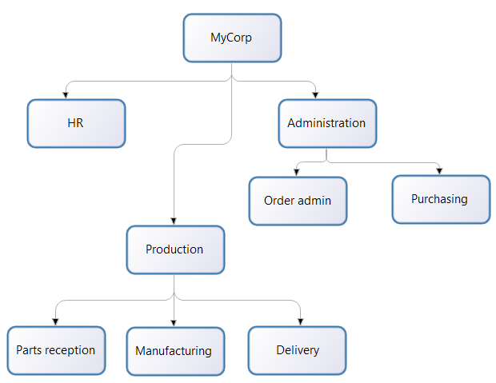
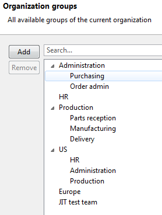

Organization overview
There are two stages to specifying who will perform a step in a process:
- When the process is designed, the designer designates an actor for the step. An actor is a placeholder that defines the theoretical user who will perform the step.
- Before a process is deployed, the actors are mapped to the real users in an organization.
This page explains the concepts of actors and organizations in Bonita.
Actors and users
When you define a process, you define who will carry out a step in the process by specifying an actor. For example, if a step can be done by any member of the HR team, you could call the actor hr, or if a step can only be done by the sales team manager in Europe, you could call the actor sales_mgr_europe.
A user is a person who has a username and a password in a Bonita organization, and can therefore perform steps in a process.
Before you deploy a process, you need to map the process actors. This mapping defines who can carry out steps in the process.
What is an organization?
An organization is a collection of users, usually defined in a hierarchical structure that is aligned with the structure of the business entity that the users belong to.
Within the organization, users belong to one or more groups.
For each group a user belongs to, the user has a role. You can define roles as required. The combination of a group and a role for a user is called a membership. A user can have several memberships but each one must apply to a different group.

In this corporation, there is a hierarchical structure, with the following units:
MyCorp
MyCorp/Administration
MyCorp/Administration/Purchasing
MyCorp/Administration/Order admin
MyCorp/HR
MyCorp/Production/Parts reception
MyCorp/Production/Manufacturing
MyCorp/Production/Delivery
These hierarchical units can be used as groups within the Bonita organization. In addition, you can create transverse groups that do not correspond to the hierarchical structure, or that also take account of some other factor, such as location. For example, suppose that MyCorp has two sites, one in the US that is corporate headquarters and production, and one in Europe that is just a production site. You could create two groups, MyCorp/US and MyCorp/Europe, each containing the users at the relevant site.
A group can be created based on any set of criteria useful to a process. For example, if MyCorp is conducting trials of a new process to control just-in-time parts delivery from a supplier, you could create a group that contains the specific users involved in the trials. The figure below shows the groups in the MyCorp organization, seen in Bonita Studio.

All the users who participate in a process must be in the same Bonita organization. For example, if you use a process to track order processing with a supplier, the supplier employees who perform steps in the process must be in the organization.
Tools for managing an organization
The Bonita model for managing an organization assumes that you use the same organization information for other tools and that it is stored in an LDAP directory. Bonita has three tools you can use to manage your organization information:
- LDAP synchronizer (in the Enterprise, Performance, Efficiency, and Teamwork editions of Bonita), for keeping the Bonita organization synchronized with your external LDAP directory. Synchronization is one-way, from LDAP to Bonita. You can run the synchronizer once to load the organization then manage it within Bonita Portal, or you can run the synchronizer on a schedule and manage the organization externally.
- Bonita Portal, for managing organization information in production within Bonita. You can manage users, groups, and roles. You can also import or export the organization information.
- Bonita Studio, for creating your initial organization definition, which must be imported into Bonita Portal prior to production, and for managing organization information while you test a process in development. Bonita Studio contains an example organization, called ACME.
This organization contains a small number of users, who belong to different groups with realistic roles. You can use this sample organization to test a process that you develop.
You can modify the ACME organization and you can create other organizations.
Custom user information
Custom user information enables custom details to be added to a user in the Organization.
In Bonita Studio:
Use the Custom tab in Organization users to add Custom information to a user.
This custom information is defined in Bonita Studio, then applied to an actor filter, and when deployed in Bonita Portal, enables the filtering of users mapped to tasks.
The custom user information is saved in the Organization schema and published so it can be used in Bonita Portal.
The Users with Custom information actor filter is provided by default, and can be applied to an actor.
It uses the custom information added to a user to map users to perform tasks in Bonita Portal.
When the process is deployed in Bonita Portal in a production environment, the filter definition is static, so it cannot be changed.
However, the value associated with a filter definition can be modified by a user with an admin profile.
The organization will be modified on the remote server. This enables tasks to be re-assigned to users in processes that are already deployed, which is then used to filter users for tasks.
See custom user information in Bonita Studio for setting the definition and values for the filter
In Bonita Portal:
This custom information can only be seen and edited by users who have the Administrator profile.
Note that if the custom user information does not exist in Bonita Studio, modifying its value for a user in Bonita Portal will not make any difference to the filter, apart from creating an error.
Synchronize the Organization between Bonita Studio and Bonita Portal first by publishing it so all values are up to date.
Organization schema XSD file
If you want to modify the organization by hand, it is important to respect the structure of the .xsd file.
You can see the standard Bonita organization .xsd file on Github, to view the xml structure and tags.